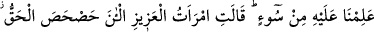
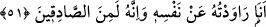

51. (Kral kadınlara): Yûsuf’un nefsinden murâd almak istediğiniz zaman
durumunuz neydi?” dedi. Kadınlar: “Hâşâ! Allah için, biz ondan hiçbir kötülük
görmedik.” dediler. Azizin karısı da dedi ki: “Şimdi gerçek ortaya çıktı. Ben onun
nefsinden murâd almak istemiştim. Şüphesiz ki o doğru söyleyenlerdendir.”
Kadınlar oraya gelince kral kadınlara: “Yûsuf ’un nefsinden murâd almak
istediğiniz” ve ona tuzak kurduğunuz “zaman durumunuz neydi?” Hiç onun size
meylettiğini hissettiniz mi? “dedi.”
Âyetin zâhiri, sadece azizin karısının değil, bütün kadınların Yûsuf’un nefsinden
murâd almak istediklerini gösteriyor. Bu bakımdan bir delil olmadığı sürece kadınların
da ondan murâd almak istemedikleri söylenemez.
(Kral kadınlara:) O can harîminin mumundan ne gördünüz?
Ki ona kötü nam kalemini çektiniz
Onun yüzüyle bahar ve bağ oldunuz da
Ona zindan yolunu gösterdiniz?
Bir sevgili ki onun teni gülden incinir
Onu bilen nasıl boynuna bukağıyı lâyık görür
Bir gül ki onun gece rüzgarına kudreti yoktur
Ayağına zindancı nasıl zincir vurur, yazık!
“Kadınlar” krala cevap vererek şöyle dedi: “Hâşâ! Allah için,” Bu ifade daha önce
geçtiği gibi böylesine iffetli birini yaratan ilâhî kudrete duyulan hayranlık ve bu kudreti
noksanlıktan tenzih etmek anlamındadır. Yâni Yûsuf gibi hâlis/temiz bir kişi yaratmaktan
âciz olmaktan Hak Teâlâ pâktir, uzaktır.
“Biz ondan hiçbir kötülük” günah ve hıyanet “görmedik.” dediler.”
(Kadınlar:) Biz Yûsuf ’tan temizlikten başka bir şey görmedik.
İzzet ve şeref sâhibi olmaktan başka bir şey görmedik.
Cevher sadefinde onun gibi pâk olmaz.
Cihanın cânı olan Yûsuf töhmetten pâktir.
“Azîzin” o mecliste hazır bulunan “karısı” Züleyhâ “da dedi ki:”
Kâşifî der ki: “Züleyhâ doğruluktan başka çare olmadığını görünce Yûsuf’un temiz
olduğunu ikrar etti.”
“Şimdi gerçek ortaya çıktı.” kalblerde ve nefislerde iyice yerleşip apaçık bir şekilde
ortaya çıktı ki: “Ben onun nefsinden murâd almak istemiştim.” Yûsuf’u ben taleb